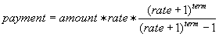

In order to explain how a structure works, let's look at an example.
A loan usually has several components in it. For simplicity, we assume
for now that no name or personal identification number is involved.
Instead, we use the loan number to identify a loan. The components
of a loan in our example are:
a loan ID, assuming an integer between 1111-9999 for now,
the loan amount, which for now we assume is a float,
the interest rate, another float, and
the term of the loan, which represents the number of months until the loan
is paid in full.
One thing I am sure everyone is concerned about in a loan is the monthly payment. A program that computes the monthly payment for a loan would be very useful. One way to compute the monthly payment is:

Please note that your bank may use a different formula to compute loan payment. As you may have noticed in the description of the loan components, it seems that we could have a new variable type, let's say loan, that includes all of the 4 components packed in it. Thus, we wish to define a new type of variable that can keep 4 variables of various types within one. A structure allows us to do this one very easily. Here is how we can pack these four variables in the structure loan.
struct Loan // Loan is called structure tag
{
int ID; // assume an
unique integer between 1111-9999
float amount; // $ amount of
the loan
float rate; // annual interest rate
int term; // number of months,
length of the loan
};
The variables between { and } are called member names, because
they are members of the Loan structure. Using the new variable
type, we can now create many variables of type Loan the same way
you have done with the simple variable types before. For example:
Loan loan1, loan2;
will create two variables of type Loan, loan1 and loan2. Both loan1 and loan2 have all four variables in them. To access each one of these variables, we will use the dot operator. For example:
loan1.ID = 2245;
will set the ID of laon1 to 2245.
Let's use the Loan structure in a program.
// P61.cpp - This program creates uses a structure for loan, initialize
it from the keyboard, then
// displays the struct
#include<iostream>
#include<cmath>
using namespace std;
struct Loan // Loan is called structure tag
{
int ID; // assume an
unique integer between 1111-9999
float amount; // $ amount of
the loan
float rate; // annual interest rate
int term; // number of months,
length of the loan
};
float payment(float amount, float rate, int term);
int main( )
{
Loan loan1;
float monthly_payment;
// Initialize the loan1 structure
cout << "Enter the ID of this
loan \n";
cin >> loan1.ID;
cout << "Enter the amount of this
loan \n";
cin >> loan1.amount;
cout << "Enter the annual interest
rate of this loan (in %) \n";
cin >> loan1.rate;
cout << "Enter the term (number
of months, length of the loan) \n";
cin >> loan1.term;
monthly_payment = payment(loan1.amount, loan1.rate, loan1.term);
cout << "The monthly payment for loan " << loan1.ID << " is: " << monthly_payment << endl;
return 0;
}
float payment(float amount, float rate, int term)
{
rate = rate/1200; // To convert
% yearly rate to monthly fraction
return amount*rate*( pow( (rate+1),
term)/ (pow( (rate+1), term) - 1) );
}
A struct can be passed to a function as a parameter. The rule for passing a struct as a parameter is the same as that of a simple variable. If you are modifying any of the members of the struct, then you need to pass the struct as call-by-reference. In the above program, we do not modify the members, so we can pass the struct to a function as call-by-value. Here is the modified version of the above program with a function that has the struct as its parameter.
// P61a.cpp - This program creates uses a structure for loan, initialize
it from the keyboard, then
// displays the struct
#include<iostream>
#include<cmath>
using namespace std;
struct Loan // Loan is called structure tag
{
int ID; // assume an
unique integer between 1111-9999
float amount; // $ amount of
the loan
float rate; // annual interest rate
int term; // number of months,
length of the loan
};
float payment(Loan l);
int main( )
{
Loan loan1;
float monthly_payment;
// Initialize the loan1 structure
cout << "Enter the ID of this
loan \n";
cin >> loan1.ID;
cout << "Enter the amount of this
loan \n";
cin >> loan1.amount;
cout << "Enter the annual interest
rate of this loan (in %) \n";
cin >> loan1.rate;
cout << "Enter the term (number
of months, length of the loan) \n";
cin >> loan1.term;
monthly_payment = payment(loan1);
cout << "The monthly payment for loan " << loan1.ID << " is: " << monthly_payment << endl;
return 0;
}
float payment(Loan l)
{
l.rate = l.rate/1200; // To convert
% yearly rate to monthly fraction
return l.amount*l.rate*( pow(
(l.rate+1), l.term)/ (pow( (l.rate+1), l.term) - 1) );
}
Exercise 6.1
Modify the P61a.cpp program such that it asks users to enter 2 different
loans this time and uses a function called initialize_loan to initialize
each loan struct. The program should also compute and display the payment
for each individual loan and the total monthly payment. Note
that you have to use a separate struct for each loan. Call your new
program ex61.cpp.